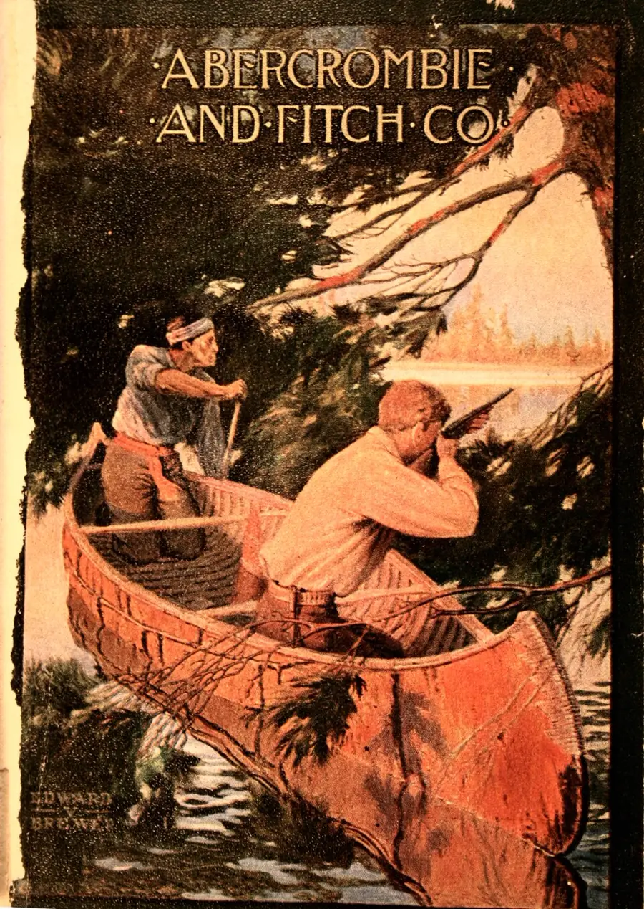

대표 로고대표 브랜드 마크
대표 로고대표 브랜드 마크애버크롬비 & 피치 Abercrombie & Fitch
애버크롬비 & 피치(Abercrombie & Fitch)는 18세에서 22세를 주요 소비자로 하는 미국의 의류 회사이다. 1892년 David T. Abercrombie와 Ezra Fitch가 설립했다.
최종 업데이트
애버크롬비 & 피치는 어떤 브랜드인가
애버크롬비 & 피치는 18세에서 22세를 주요 소비자로 하는 미국의 의류 회사로, 본사는 New Albany에 있다. 미국에 300개 이상의 매장을 두고 있으며 세계 시장으로 확장해 왔다.
아동의류 애버크롬비(abercrombie), 홀리스터(Hollister Co), 길리 힉스(Gilly Hicks) 등의 파생 브랜드를 전개했고, 룰 No.925(Ruehl No.925)는 2010년 초에 철수했다. 2013년 10월 31일 서울 청담동에 매장을 열면서 대한민국에 진출했다.
아시아에 진출하지 않겠다고 선언한 적이 있으나, 아시아 진출의 배경은 미국에서의 영업부진이다. 최고경영자 마이크 제프리스의 외모 관련 발언이 알려지면서 논란이 됐다.
애버크롬비 & 피치는 어떻게 시작되고 성장했나
애버크롬비 & 피치는 1892년 David T. Abercrombie와 Ezra Fitch가 설립한 미국의 의류 회사이다.
본사는 New Albany에 있다. 미국에서 300개 이상의 매장을 운영하는 규모로 성장한 뒤 세계 시장으로 확장했다.
파생 브랜드로 아동의류 애버크롬비(abercrombie), 홀리스터(Hollister Co), 길리 힉스(Gilly Hicks)를 전개했으며 룰 No.925(Ruehl No.925)는 2010년 초에 철수했다. 2013년 10월 31일 서울 청담동에 매장을 내며 대한민국에 진출했고, 이후 티셔츠는 한세실업이 생산했다.
애버크롬비 & 피치의 브랜드 아이덴티티는 무엇인가
18세에서 22세를 주요 소비자로 삼는 미국 의류 회사로, 홀리스터 등 파생 브랜드를 전개하며 최고경영자의 발언 논란으로도 알려졌다.
애버크롬비 & 피치의 대표 제품과 서비스는 무엇인가
애버크롬비 & 피치는 의류를 만드는 회사이다. 파생 브랜드로 아동의류 애버크롬비(abercrombie), 홀리스터(Hollister Co), 길리 힉스(Gilly Hicks)를 전개하며, 룰 No.925(Ruehl No.925)는 2010년 초에 철수했다.
미국에는 300개 이상의 매장이 있고, 서울 청담동 매장은 2013년 10월 31일 문을 열었다. 한국에서 티셔츠는 한세실업이 생산했다.
이 상표의 바지는 다른 회사 제품에 비해 허리가 더 크고 길이가 더 짧아, 32*34 사이즈가 랄프 로렌이나 리바이스의 33*33에 해당한다.
애버크롬비 & 피치 로고는 어떻게 변해왔나
대표 로고대표 브랜드 마크사진으로 보는 애버크롬비 & 피치의 역사

자주 묻는 질문
애버크롬비 & 피치는 어느 나라 브랜드인가요?
애버크롬비 & 피치는 미국의 패션·럭셔리 브랜드입니다.
애버크롬비 & 피치는 언제 설립되었나요?
애버크롬비 & 피치는 1892년 설립되었습니다.
애버크롬비 & 피치의 브랜드 아이덴티티는 무엇인가요?
18세에서 22세를 주요 소비자로 삼는 미국 의류 회사로, 홀리스터 등 파생 브랜드를 전개하며 최고경영자의 발언 논란으로도 알려졌다.
애버크롬비 & 피치의 대표 제품은 무엇인가요?
애버크롬비 & 피치는 의류를 만드는 회사이다.
애버크롬비 & 피치는 현재 어떤 상태인가요?
위키백과 본문 기준 회장 및 최고경영자는 마이크 제프리스이다.
애버크롬비 & 피치의 창업자는 누구인가요?
애버크롬비 & 피치의 창업자는 David T. Abercrombie, Ezra Fitch입니다(위키데이터 기준).
애버크롬비 & 피치의 본사는 어디에 있나요?
애버크롬비 & 피치의 본사는 New Albany에 있습니다(위키데이터 기준).
출처와 검증
애버크롬비 & 피치 관련 참고: 공식 웹사이트 · 위키데이터 Q319344 · 한국어 위키백과 · 영어 위키백과. 브랜드명은 한글과 원어를 함께 표기하되 데이터에 없는 표기는 만들지 않습니다. 기원 국가·설립연도는 검수된 정의문에서 확인된 값을 우선하고, 없을 때만 공식 웹사이트 URL이 일치하는 위키데이터 개체의 값을 씁니다. 탄생일의 월·일은 위키데이터, 위키백과 정보상자, 본문 가운데 같은 연월로 확인되는 값만 싣고, 출처끼리 다르면 싣지 않습니다. 웹 첫 보관은 인터넷 아카이브가 공식 사이트 첫 화면을 처음 보관한 날로, 사이트 개설일과 다를 수 있습니다. 연 매출은 미국 증권거래위원회(SEC)에 제출된 연차 보고서(10-K)의 XBRL 값이며 달러 금액을 반올림했습니다. 위키데이터 값은 2026-10-18 기준입니다.